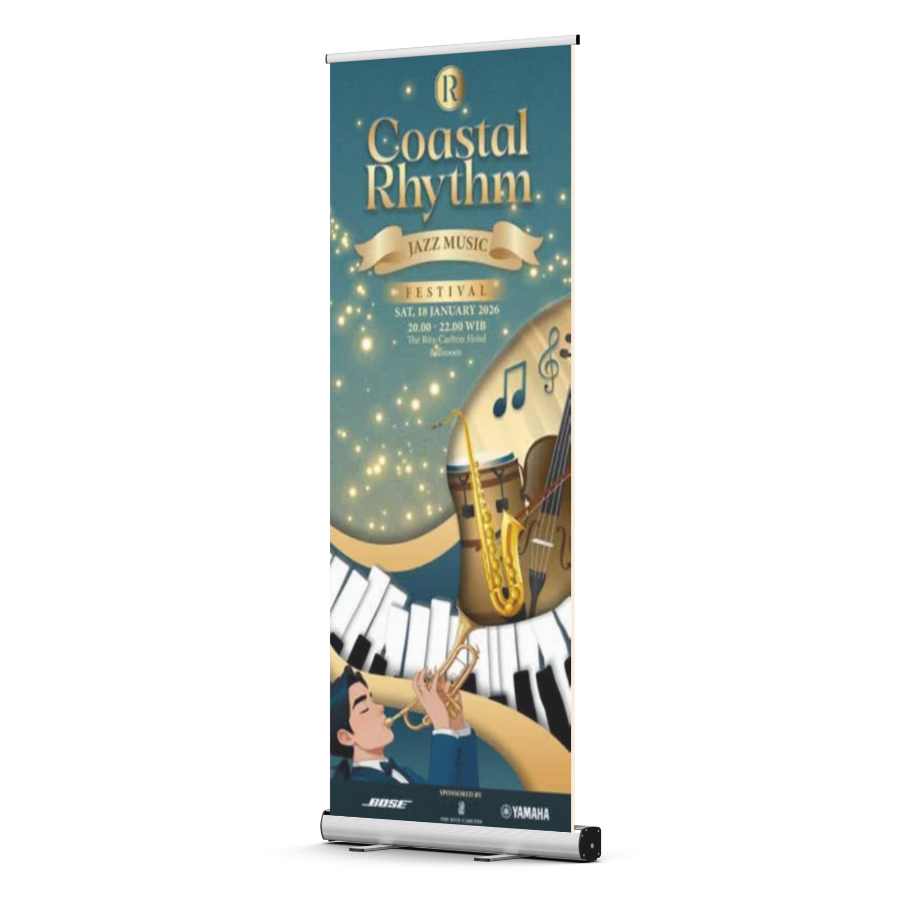
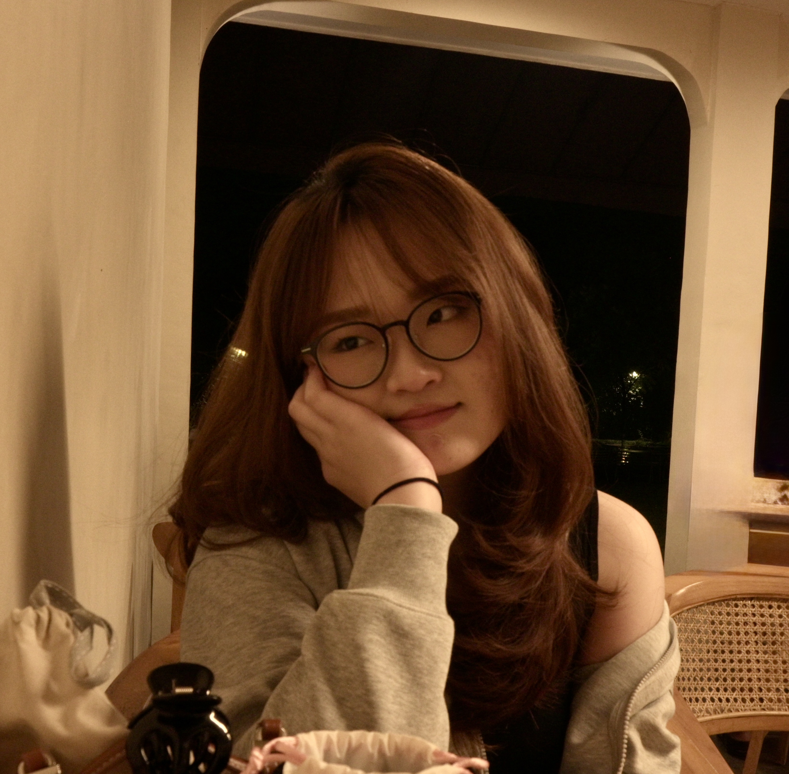
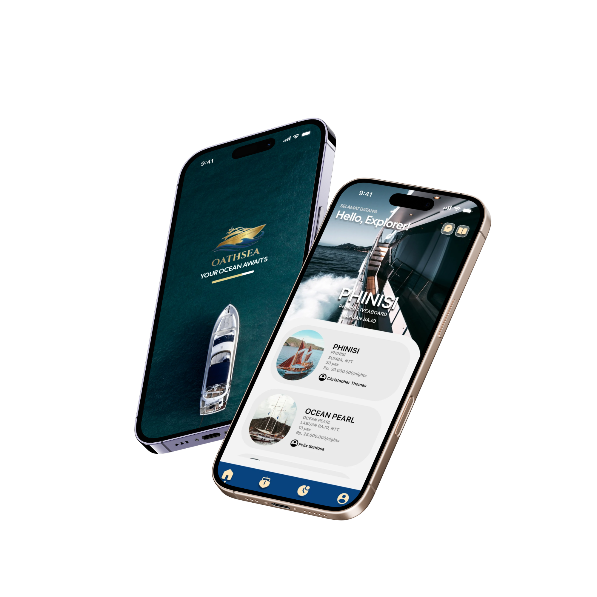
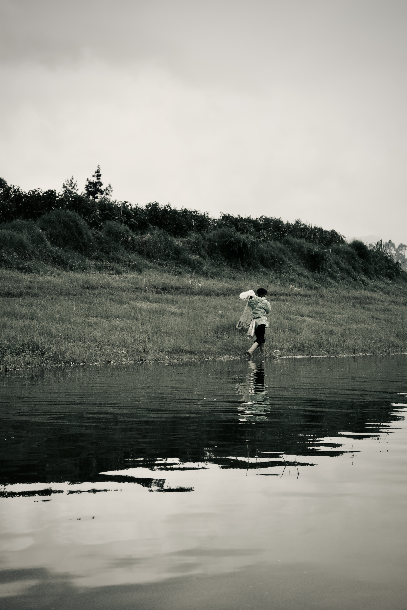
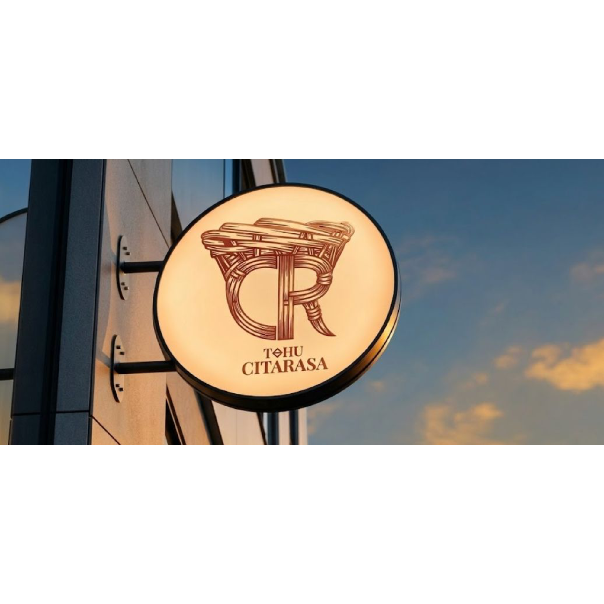

hi, i'm Keira Angelica Andrea you can call me kei!.
Interactive Design & Technology @ Binus University. Blending functionality and aesthetics. Specializing in UI/UX Design, Illustration, and Photography.
★ now booking new projects ★ open to freelance & collabs ★ scroll for the full experience ★

About Kei
I study Interactive Design & Technology at Binus University. Blending functionality and aesthetics, I specialize in UI/UX Design, Illustration, Photography and Editorial Layouts to create engaging visual experiences.
UI/UX Design
Illustration
Branding
Photography
Leadership
experience.log
I helmed our senior theatre capstone by managing the end-to-end production while crafting an original script. My work focused on bridging creative narrative with logistical execution, ensuring the play's thematic depth resonated with our graduating class.
As a 2025 NEXT Freshmen Leader, I provided direct mentorship and guidance to help incoming students navigate their transition into Binus University.
As a 2025 WeFest Committee member, I collaborated on the planning and operational execution of large-scale campus events at Binus University.
curriculum vitae
Want to see my full professional timeline and academic history? Grab a copy of my neat, single-page resume or open the digital version directly.
📄
KEIRA ANGELICA ANDREA
Interactive Design & Technology
[ EDUCATION ]
· Binus University (Interactive Design)
[ SKILLS ]
· UI/UX, Illustration, Editorial Layouts
[ EXPERIENCE ]
· Senior Capstone Producer, WeFest Comm
selected work

User Interface Design

Mencari. Photography project
